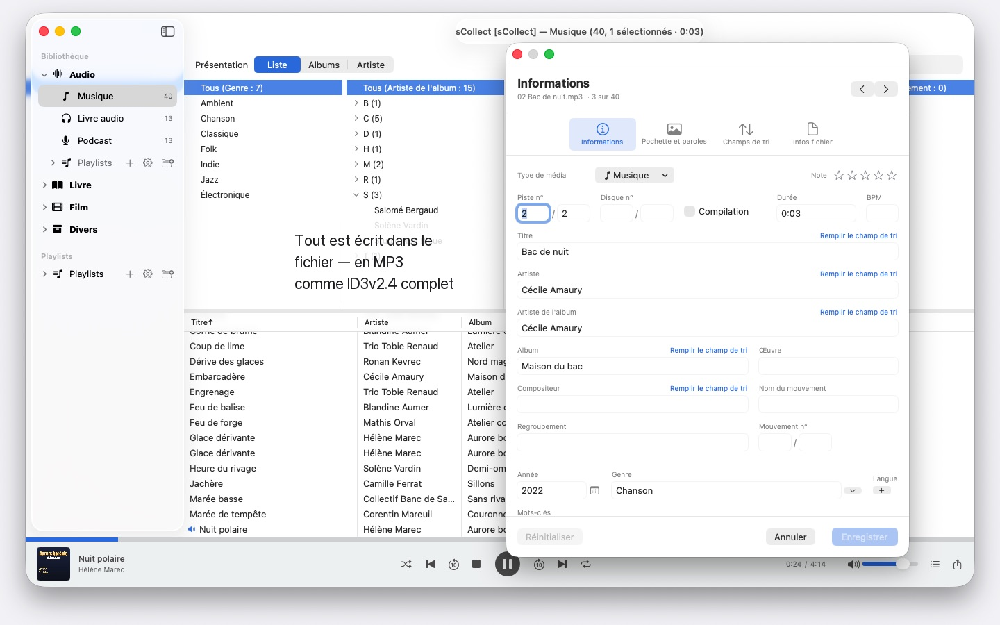
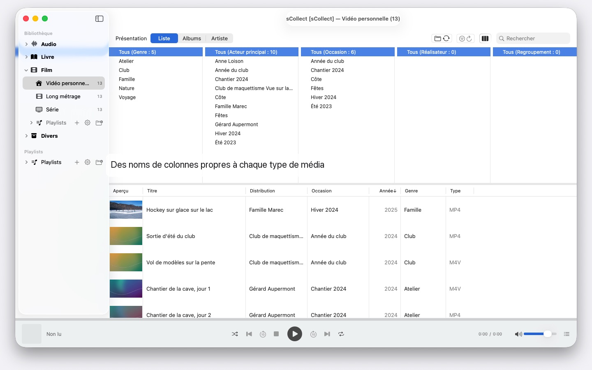

sCollect
Musique, films, livres & plus
Prochainement · octobre 2026Des milliers d’artistes, plusieurs Mac, tout macOS à partir du 14 : sCollect range musique, films et livres et écrit vos données dans les fichiers. Sans compte ni cloud.


sCollect est une bibliothèque pour tout ce qui se collectionne : musique, films, vidéos personnelles, livres audio, podcasts et e-books — et pour des objets qui ne sont pas des fichiers médias, comme des pièces ou des timbres, photographiés et décrits. Vous nommez vous-même les catégories.
La différence avec un catalogue ordinaire : sCollect réécrit. Ce que vous saisissez dans l’éditeur va non seulement dans la base de données, mais aussi dans les métadonnées du fichier. Votre travail reste ainsi acquis, même si vous quittez un jour sCollect.
UN RANGEMENT QUI SE FAIT TOUT SEUL
À l’importation, sCollect met chaque fichier à sa place — par type de média, artiste, album ou date, selon vos réglages. Chaque type de média peut avoir son propre dossier, même sur un autre disque dur : les films sur le grand disque externe, la musique sur l’interne rapide.
Pour laisser votre collection où elle est, liez-la. Les fichiers liés ne sont jamais touchés.
POUR LES PHOTOS ET LES VIDÉOS
Si vous photographiez ou filmez, rangez un type de média par date : à l’importation, les fichiers vont dans des dossiers par année et par mois, et le nom du fichier porte la date de prise de vue, lue dans le fichier même — pour les vidéos, avec une mention si la caméra omet le fuseau horaire. Les préfixes d’appareil comme IMG_ disparaissent du titre sur demande, une date ISO s’y ajoute, et liste et disque trient de la même façon.
DES MÉTADONNÉES QUI ARRIVENT DANS LE FICHIER
Un éditeur pour un élément, un second pour plusieurs à la fois. Tous deux écrivent dans le format du fichier — ID3v2.4 pour les MP3, la structure de tags de MP4 et M4A, les commentaires Vorbis pour FLAC et OGG, les blocs de texte d’AIFF et WAV, DSF pour les enregistrements DSD, EXIF, IPTC et XMP pour les images.
Si un format n’a pas de champ pour une information ou si un fichier est protégé contre la copie, sCollect place un fichier annexe à côté au lieu de la perdre. Si le fichier diffère de la bibliothèque, l’éditeur le dit avant que vous n’écrasiez rien.
CE QUI RACCOURCIT LE TRAVAIL
- Rechercher et remplacer dans tous les champs, avec aperçu avant modification
- Trouver les doublons dans toute la catégorie, avec un verdict clair sur la meilleure version
- Un navigateur de colonnes comme dans une app de musique, avec sélection multiple par colonne. Des milliers d’artistes sans défiler : regroupés par initiale, A, AB, ABB – trois clics suffisent
- Lecture audio et vidéo, avec playlists et position de lecture mémorisée
TROUVER LES FICHIERS MANQUANTS AU LIEU DE LES CHERCHER
Un passage marque chaque entrée dont le fichier manque et retient le résultat. Une vue dédiée n’affiche que ces entrées et coche ce que vous avez relié.
PLUSIEURS MAC, UNE SEULE COLLECTION
Une bibliothèque peut déclarer des copies. Ce que vous modifiez dans le fonds principal est reporté ensuite dans chaque copie accessible, fichiers et tags compris. Si une copie est hors ligne, la modification attend son retour.
Peu importe le macOS : un Mac sous macOS 14 et un sous macOS 26 lisent la même collection, aucune mise à jour ne la convertit. Les copies ne sont pas pour autant une sauvegarde.
IMPORTATION ET EXPORTATION
Les collections existantes entrent via le XML iTunes, notes et playlists comprises. Elles ressortent en sCollect-XML — sans perte, pour un déménagement ou une sauvegarde —, en playlist pour Apple Music ou en XML iTunes.
SUR VOTRE MAC, ET NULLE PART AILLEURS
Aucun compte, aucun cloud, aucune analyse, aucune publicité. sCollect travaille uniquement avec les dossiers que vous lui donnez.
C’est aussi pourquoi sCollect n’extrait pas de CD et ne cherche pas les informations des morceaux sur Internet — Apple Music fait déjà les deux. Importez le CD dans Apple Music en AAC, Apple Lossless ou MP3, et les fichiers arrivent dans sCollect avec leurs informations. Ainsi, aucun service ne sait ce que vous collectionnez ni comment vous le rangez.
En 25 langues au choix, chacune avec son aide complète.
- Nécessite macOS 14 ou version ultérieure
- 25 langues
- Assistance : SwiftAppsBavaria@gmx.net
Autres apps
SwiftRename
Renommer des fichiers par lots : d'après la date de prise de vue, avec une numérotation continue ou directement classés dans des dossiers par année et par mois.
sVectorLift
Ouvrir, visualiser et enregistrer en SVG d'anciens cliparts vectoriels : CorelDRAW, Windows Metafile et CGM.
sName2Date
Écrire la date du nom de fichier comme date de prise de vue dans les photos, films et enregistrements audio, pour qu'un fichier comme IMG_20240115_103000.jpg se classe correctement dans n'importe quel gestionnaire de photos. Les données d'image et de vidéo restent intactes ; les PDF et autres fichiers sans date de prise de vue reçoivent les dates du fichier, et sur demande le nom passe aussi en notation ISO. Des arborescences de dossiers entières d'un coup, et chaque passage peut être annulé avec ⌘Z.
sName2Date Lite
L'édition pour un fichier par passage : écrire la date du nom de fichier comme date de prise de vue dans une photo, un film ou un enregistrement audio, la définir à la main, mettre le nom en notation ISO et tout annuler avec ⌘Z, avec les mêmes capacités que sName2Date, seulement sans dossiers entiers.
sCollectPlay
Le lecteur de la médiathèque : lire musique, films, livres audio et podcasts simplement depuis un dossier, un fichier XML iTunes ou une médiathèque sCollect, sans rien modifier aux tags des fichiers. Avec listes de lecture, pistes audio et de sous-titres et, pour les films, ralenti et avance image par image. Ce que macOS ne lit pas lui-même, comme MKV, AVI ou DSD, est confié à un lecteur externe.
sCollectPlay Lite
L'édition allégée de sCollectPlay : ouvrir simplement un dossier, un fichier XML iTunes ou une médiathèque sCollect et y lire musique, films, livres audio et podcasts, avec listes de lecture, pistes audio et de sous-titres, ralenti et avance image par image. Une source par session ; le navigateur en colonnes, les listes de lecture personnelles et les sources récemment utilisées sont réservés à la version complète.
sBikeBridge
Analyser ses sorties à vélo sans les téléverser sur un portail : importer les fichiers FIT de tout compteur vélo qui enregistre dans ce format, ainsi que GPX et TCX. Les sorties sont conservées dans une bibliothèque propre sur le Mac, avec carte, puissance et fréquence cardiaque, photos et notes ; l'import détecte les doublons. Des indicateurs par année ou par mois et des filtres par distance, dénivelé et durée rendent les sorties comparables. Sur demande, la carte est aussi disponible hors ligne.